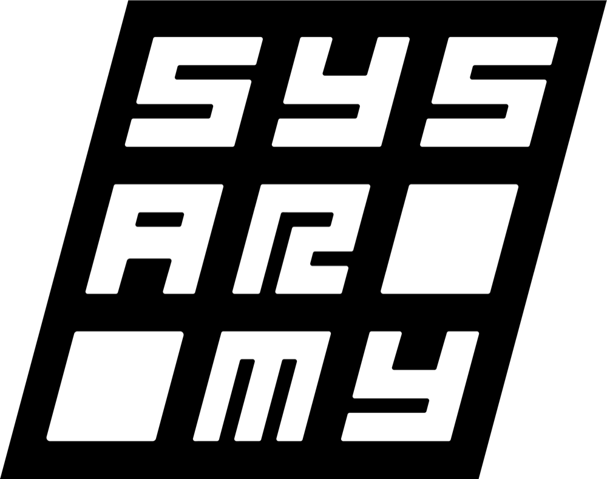
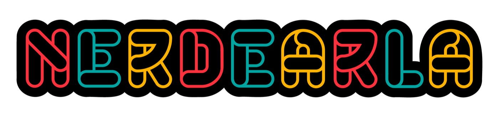

Communities
We run and moderate online spaces where IT professionals help each other every day — from troubleshooting production incidents to career advice.
/* Hola Mundo LLC \
Hello World SRL */
Hola Mundo is the organization behind Sysarmy — a community of tens of thousands of systems, infrastructure and software professionals — and Nerdearla, the largest free technology conference in the Spanish-speaking world.
// About us
Hola Mundo LLC operates the communities, events and media that connect Spanish-speaking technology professionals across Latin America, Spain and beyond. What started in Buenos Aires in 2012 as a gathering of systems administrators has grown into a network of communities, conferences, podcasts and educational initiatives reaching hundreds of thousands of people every year.
Our mission is simple: make high-quality technical knowledge accessible to everyone, in Spanish, for free. We do it by supporting the people who keep the internet running — engineers, sysadmins, SREs, developers, security specialists and data professionals — and by producing events where they can learn, share and meet each other.

// Our community
Support for those who provide support.
Sysarmy is the largest technology community in the Spanish-speaking world. Born in 2012 among systems administrators in Argentina, today it brings together tens of thousands of IT professionals in active chat communities, regular meetups and knowledge-sharing spaces across Latin America.

// Our conference
The largest free tech conference in the Spanish-speaking world.
Nerdearla is our flagship event: a multi-day technology conference that is 100% free to attend, both on-site and online. Since 2014 it has featured international speakers — including creators of the technologies the industry runs on — alongside hands-on workshops, community spaces and job fairs.
// What we do
We run and moderate online spaces where IT professionals help each other every day — from troubleshooting production incidents to career advice.
From neighborhood meetups to Nerdearla's main stage, we produce events of every size, always free for attendees.
Talks are recorded and published openly, our salary survey data is shared with the community, and our podcasts bring industry voices to everyone.
We connect companies with the region's tech talent through sponsorships, job fairs and employer branding at our events.